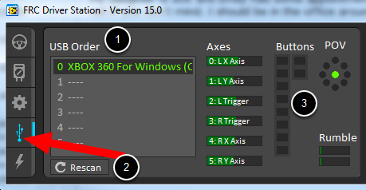
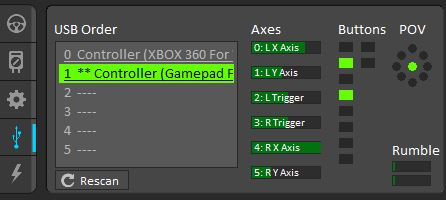
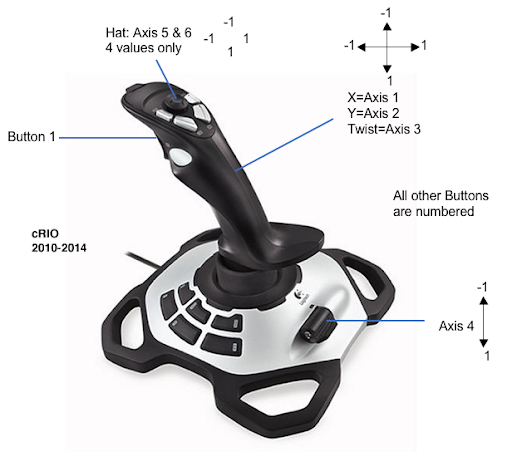
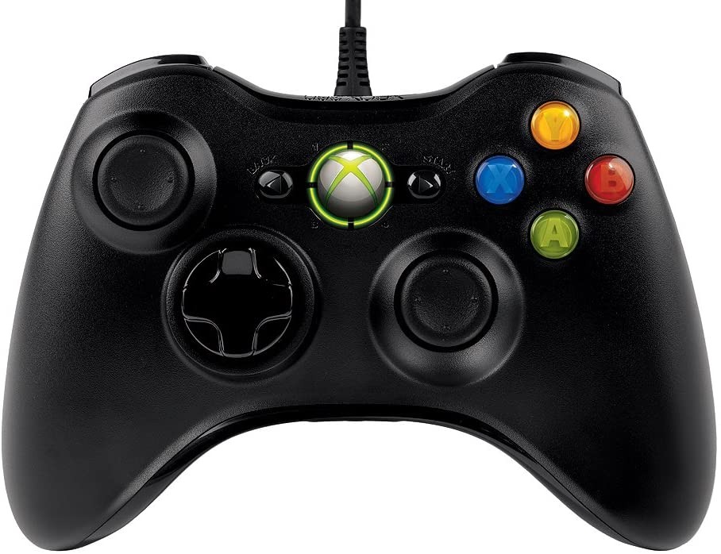
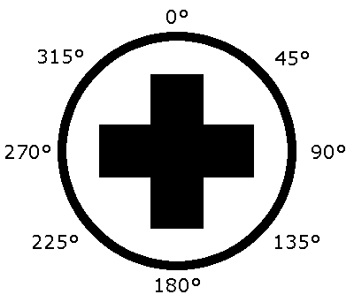

Joysticks
A joystick can be used with the Driver Station program to control the robot. Almost any “controller” that can be recognized by Windows can be used as a joystick. Joysticks are accessed using the GenericHID class. This class has three relevant subclasses for preconfigured joysticks. You may also implement your own for other controllers by extending GenericHID. The first is Joystick which is useful for standard flight joysticks. The second is XboxController which works for the Xbox 360, Xbox One, or Logitech F310 (in XInput mode). Finally, the PS4Controller class is ideal for using that controller. Each axis of the controller ranges from -1 to 1.
The command based way to use the these classes is detailed in the section: Binding Commands to Triggers.
Driver Station Joysticks
The USB Devices Tab of the Driver Station is used to setup and configure the joystick for use with the robot. Pressing a button on a joystick will cause its entry in the table to light up green. Selecting the joystick will show the values of axes, buttons and the POV that can be used to determine the mapping between physical joystick features and axis or button numbers.
The USB Devices Tab also assigns a joystick index to each joystick. To reorder the joysticks simply click and drag. The Driver Station software will try to preserve the ordering of devices between runs. It is a good idea to note what order your devices should be in and check each time you start the Driver Station software that they are correct.
When the Driver Station is in disabled mode, it is routinely looking for status changes on the joystick devices. Unplugged devices are removed from the list and new devices are opened and added. When not connected to the FMS, unplugging a joystick will force the Driver Station into disabled mode. To start using the joystick again: plug the joystick in, check that it shows up in the right spot, then re-enable the robot. While the Driver Station is in enabled mode, it will not scan for new devices. This is a time consuming operation and timely update of signals from attached devices takes priority.
Note
For some joysticks the startup routine will read whatever position the joysticks are in as the center position, therefore, when the computer is turned on (or when the joystick is plugged in) the joysticks should be at their center position.
When the robot is connected to the Field Management System at competition, the Driver Station mode is dictated by the FMS. This means that you cannot disable your robot and the DS cannot disable itself in order to detect joystick changes. A manual complete refresh of the joysticks can be initiated by pressing the F1 key on the keyboard. Note that this will close and re-open all devices, so all devices should be in their center position as noted above.
Joystick Class

Joystick exampleJoystick = new Joystick(0); // 0 is the USB Port to be used as indicated on the Driver Station
Joystick exampleJoystick{0}; // 0 is the USB Port to be used as indicated on the Driver Station
exampleJoystick = wpilib.Joystick(0) # 0 is the USB Port to be used as indicated on the Driver Station
The Joystick class is designed to make using a flight joystick to operate the robot significantly easier. Depending on the flight joystick, the user may need to set the specific X, Y, Z, and Throttle channels that your flight joystick uses. This class offers special methods for accessing the angle and magnitude of the flight joystick.
XboxController Class

XboxController exampleXbox = new XboxController(0); // 0 is the USB Port to be used as indicated on the Driver Station
XboxController exampleXbox{0}; // 0 is the USB Port to be used as indicated on the Driver Station
exampleXbox = wpilib.XboxController(0) # 0 is the USB Port to be used as indicated on the Driver Station
The XboxController class provides named methods (e.g. getXButton, getXButtonPressed, getXButtonReleased) for each of the buttons, and the indices can be accessed with XboxController.Button.kX.value. The rumble feature of the controller can be controlled by using XboxController.setRumble(GenericHID.RumbleType.kRightRumble, value). Many users do a split stick arcade drive that uses the left stick for just forwards / backwards and the right stick for left / right turning.
PS4Controller Class

PS4Controller examplePS4 = new PS4Controller(0); // 0 is the USB Port to be used as indicated on the Driver Station
PS4Controller examplePS4{0}; // 0 is the USB Port to be used as indicated on the Driver Station
examplePS4 = wpilib.PS4Controller(0) # 0 is the USB Port to be used as indicated on the Driver Station
The PS4Controller class provides named methods (e.g. getSquareButton, getSquareButtonPressed, getSquareButtonReleased) for each of the buttons, and the indices can be accessed with PS4Controller.Button.kSquare.value. The rumble feature of the controller can be controlled by using PS4Controller.setRumble(GenericHID.RumbleType.kRightRumble, value).
POV
On joysticks, the POV is a directional hat that can select one of 8 different angles or read -1 for unpressed. The XboxController/PS4Controller D-pad works the same as a POV. Be careful when using a POV with exact angle requirements as it is hard for the user to ensure they select exactly the angle desired.
GenericHID Usage
An axis can be used with .getRawAxis(int index) (if not using any of the classes above) that returns the current value. Zero and one in this example are each the index of an axis as found in the Driver Station mentioned above.
private final PWMSparkMax m_leftMotor = new PWMSparkMax(Constants.kLeftMotorPort);
private final PWMSparkMax m_rightMotor = new PWMSparkMax(Constants.kRightMotorPort);
private final DifferentialDrive m_robotDrive = new DifferentialDrive(m_leftMotor, m_rightMotor);
private final GenericHID m_stick = new GenericHID(Constants.kJoystickPort);
m_robotDrive.arcadeDrive(-m_stick.getRawAxis(0), m_stick.getRawAxis(1));
frc::PWMVictorSPX m_leftMotor{Constants::kLeftMotorPort};
frc::PWMVictorSPX m_rightMotor{Constants::kRightMotorPort};
frc::DifferentialDrive m_robotDrive{m_leftMotor, m_rightMotor};
frc::GenericHID m_stick{Constants::kJoystickPort};
m_robotDrive.ArcadeDrive(-m_stick.GetRawAxis(0), m_stick.GetRawAxis(1));
leftMotor = wpilib.PWMVictorSPX(LEFT_MOTOR_PORT)
rightMotor = wpilib.PWMVictorSPX(RIGHT_MOTOR_PORT)
self.robotDrive = wpilib.drive.DifferentialDrive(leftMotor, rightMotor)
self.stick = wpilib.GenericHID(JOYSTICK_PORT)
self.robotDrive.arcadeDrive(-self.stick.getRawAxis(0), self.stick.getRawAxis(1))